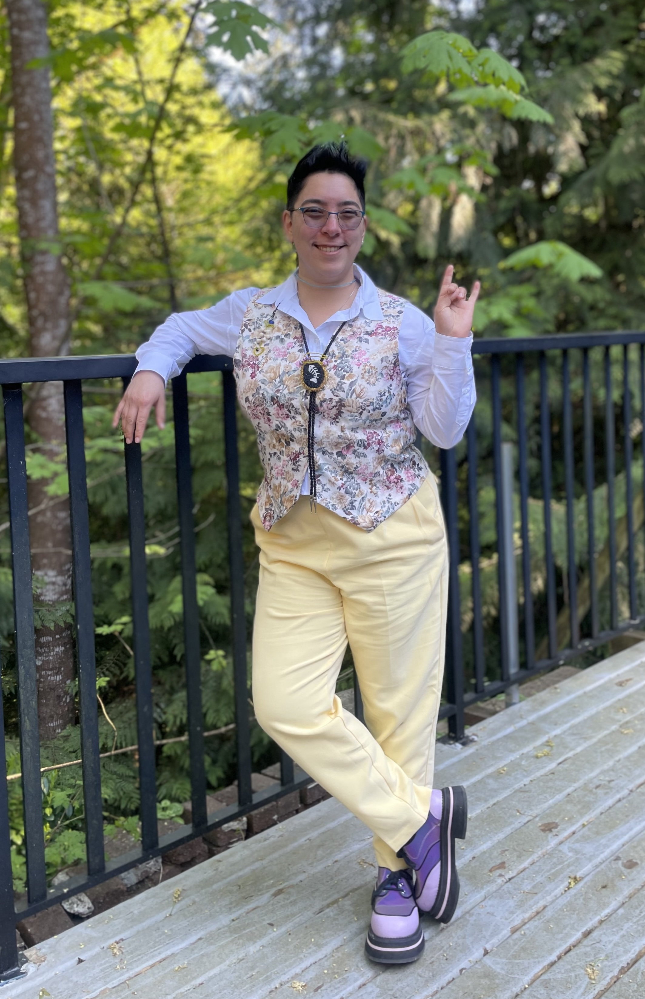

The Understanding is the stage name for Desireah Eustache. They are Two-Spirit/non-binary from the Simpcw First Nation, BC. They grew up writing songs alongside their twin sister Maggie, playing guitar and performing in a couple bands. They are a graduate from Lasalle College's Professional Recording Arts program. They aim to stay busy in the music industry working on freelance work in their spare time, songwriting and learning to DJ. Electronic music is a great passion of theirs and you will most likely see them at a local Vancouver Rave. They flow under the name "The Whippening".